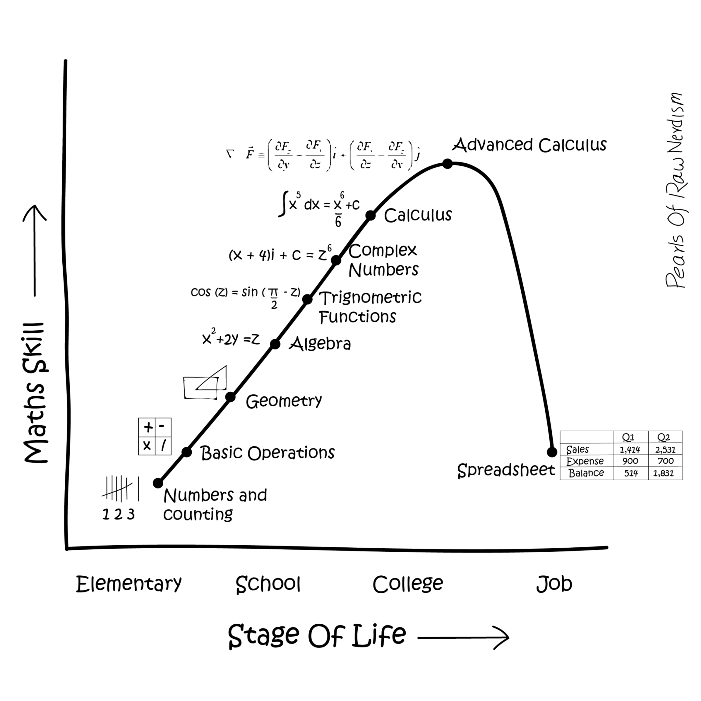

Let’s take a look at the course syllabus together.
EDS 212: Day 1, Lecture 1
Course intro, algebra refresher
August 4th, 2025
Welcome to EDS 212 - Essential Math in Environmental Data Science
Let’s take a look at the course syllabus together.
Course description
Topics overview
Maybe you’re thinking…

Why am I taking a math class?
or,
Why do I have to know math when a computer will do it for me?
A quantitative brain warm-up
MEDS students have diverse work & academic histories
This course (re)introduces math concepts and tools that:
Math brain warm up
Math brain warm up
Algebra blitz
You can get far with a few rules:
1. Order of operations (P-E-MD-AS)
P - Parentheses
E - Exponents
M/D - Multipication / division
A/S - Addition / subtraction
1. Order of operations practice problems
Simplify the following: \((12 - 2)/5 + 5(3+2)/6\)
Simplify the following: \(\frac{4-6}{2}(3+1)-\frac{1+2*4}{3}\)
Simplify the following: \(3x+4(8x-6x) -(2y-5)+\frac{2x(1-3)}{2}\)
1. Notation matters
Simplify the following: \(6 \div 3(4+2)\)
What would be a harder-to-misinterpret way to write this?
–
1. An important takeaway:
Being readable & hard to incorrectly interpret is often as important as being technically “correct”
When designing things, it’s important to consider the different ways that users might misuse or misunderstand it - then build in safeguards to help them use it correctly. Clear communication and user-centered design is critical in environmental data science.
2. Equations are solved
\[2x-5y+3.9=8x^2-100.7x\]
Provides solutions for the questions:
2./3. It is often helpful to reorganize things
In the equation on the previous slide (shown below), we might want to solve for y:
\[2x-5y+3.9=8x^2-100.7x\]
The one rule to rule them all:
You can do whatever you want to an equation, as long as you do the exact same thing to both sides. That includes ensuring that you are applying something entirely to each side.
3. We’re really just doing the same thing to both sides until we’re happy with the format
Example:
Apply the same operation to each side of the following equation step-by-step to isolate \(x\) on one side. Write out all steps.
\[4x+8=5-2x\]
3. We’re really just doing the same thing to both sides until we’re happy with the format
Example:
Apply the same operation to each side of the following equation step-by-step to isolate \(a\) on one side. Write out all steps.
\[\frac{2(a+1)}{3a}+4=6\]
Math brain warm up
Exponents & how to do math with them
\[x^n=x\times x\times\ x \times x...(n\space times)\]
Evaluate the following to find a value for \(y\):
\(y = 12-2^4\)
\(2y + 30=y+3^3\)
Exponent rules
Exponent practice
Simplify the following expressions using the rules of exponents:
1. \(3x^5x^8x^{-11}\)
2. \(\frac{-8x^6}{2x^4}+7x^2\)
3. \(\frac{3x}{x^5}-3.8x^4\frac{x^3}{x^6}+8.1x-11.2\)
Multiplying expressions (FOIL)
First, Outside, Inside, Last
Example:
\[(2x+5)(x-3)\]
\[= (2x \times x) (2x \times -3) (5 \times x) (5 \times -3)\]
\[= 2x^2 - 6x + 5x - 15\]
\[=2x^2-x-15\]
Math brain warm up
UNITS. UNITS. UNITS.
Think about these statements, which all contain the same value of 4:
There are four in the refrigerator.
There are four burritos in the refrigerator.
There are four roaches in the refrigerator.
There are four million dollars in the refrigerator.
Units are critical in environmental data science
We cannot responsibly work with data without knowing the units of each variable we’re working with.
That means we need to always familiarize ourselves with metadata, carefully check units and any unit conversions, and understand how units combine into the units of a dependent variable.
Dimensional analysis for unit conversions
In dimensional analysis, we multiply initial units by a sequence of conversion factors to arrive at the final desired units.
For example, to convert \(100 \frac{g}{cm^3}\) into units of \(\frac{kg}{in^3}\), given that 1 cm3 = 0.061 in3.
\[100\frac{g}{cm^3}*\frac{1kg}{1000g}*\frac{1cm^3}{0.061in^3}=1.639\frac{kg}{in^3}\]
Unit conversion practice
Practice dimensional analysis to perform the following conversions:
Math brain warm up
Functions
Functions are mathematical expressions that tell us how input values are related to output values.
For example, \(y = 3x-5\) is a function that tells us the value of y at any value of x. In this scenario, we would probably say y is a function of x.
Could you also rewrite it and say x is a function of y? Here, with no knowledge of what’s an input and what’s an output, sure - but usually in environmental data science we specify the input variable(s), and the output variable(s) carefully. What follows is the expression in the format of: “[output variable(s)] is/are a function of [input variable(s)]”.
Thinking about inputs and outputs
For the following combinations of related variables, which do you expect would be the input and the output in a function describing how they are related? Say your answer in a sentence, e.g. “Evapotranspiration is a function of air temperature.”
fuel (biomass) / slope / wildfire severity / windspeed / air temperature
wind speed / power generated by wind turbine
soil C:N ratio / bacterial biomass / soil water content / leaf litter decomposition rate
Function notation
Single variable (univariate) function:
\(f(x) = [expression\space containing \space x]\)
Multivariate function:
\(g(a,T,z)=[expression\space containing \space a, T, \space and \space z]\)
Evaluating functions
For continuous functions, we evaluate them by plugging in variable values.
Example:
Evaluate \(g(x,t)=2.4x+0.5t^2\) at \(x = 3\) and \(t = 10\)
\(g(3, 10) = 2.4(3) + 0.5(10^2)= 57.2\)